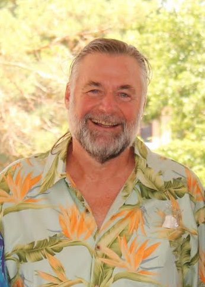

Remembering Terry Pickett

On Tuesday January 21, 2025, Terry Pickett, beloved father and husband, passed away at the age of 80. He is preceded in death by his parents, Lee and Ruth Pickett, his brother Bill, and his sister Louisa.Terry grew up with his five siblings in the family home on Forest Avenue in Kansas City, MO. He had fond memories of riding the trolley, watching ball games on the TVs in the window of the local appliance store, and working his way up the ranks to become an Eagle Scout. He attended Rockhurst High School and continued on to receive his Bachelor’s degree from Rockhurst College (now University).
Terry stayed in academics, attending Bradley University to get his Master’s degree in speech and to coach the undergraduate debate teams. It was there he met his future wife, Margaret (Johnny to friends and family, J to Terry).
Terry and Johnny began their 55 years of married life in 1969. Johnny worked for the Federal Reserve Bank of Kansas City while Terry pursued a PhD from the University of Kansas in Communication Studies. He graduated in 1974 and became an Assistant Professor at the University of Pittsburgh while Johnny earned a graduate degree at Carnegie Mellon University.
In 1980, Terry was offered a professor position at Iowa State University in Ames, Iowa. It was an opportunity to be closer to family in Kansas City, and so Terry and Johnny moved to Iowa, which would be their home for the next 25 years. It was the perfect town to start a family, Terry’s favorite daughter (and least favorite as he would jokingly point out on occasion) Kate was born in 1984 just as spring finals were wrapping up. He would stay at home with baby Kate over the summer, cementing a bond between father and daughter that would last a lifetime.
At Iowa State, Terry taught Communication Studies before eventually retiring to start his own consulting business. Terry Pickett and Associates had devoted clients big and small, near and far. In his free time, Terry loved going to the theater with his friends, traveling to Colorado to camp and hike, and volunteering with Beyond Welfare.
For his 50th birthday, Terry left the United States for the first time, traveling to Australia and New Zealand. The trip sparked a three decade love of travel that took him and Johnny to all seven continents.
In 2007, with Kate grown and out of the house, Terry retired and he and Johnny moved to Pagosa Springs, CO, accomplishing a lifelong dream to live in the Rocky Mountain state. Terry quickly built his new community in Colorado, making fast friends who coffeed together once a week, and volunteering with Habitat for Humanity of Archuleta County. He launched a home repair program which helped fund repairs on existing homes. Terry always loved to leave a place better than he found it.
Terry and Johnny couldn’t ignore the pull back to Kansas City after the birth of their granddaughters, Margot and Mia. In April 2022, they moved back to their hometown to be closer to their grandchildren. Terry would do anything for those girls, ignoring aching knees and hips to get down on the ground and play with them.
Terry will be remembered for bringing people together with love and laughter (and more than a few groans at his puns). He loved his family, travel, all genres of music, making things with his hands, a good movie and a fine martini. He spent his time making his community better, helping others with a smile and a joke. He was never shy to share with friends and family how much he loved them. He is survived by his wife, Margaret Pickett, daughter Kate McNair, son-in-law Ryan McNair, granddaughters Margot and Mia McNair and siblings Anola Pickett, Mary Vincent and Tom Pickett.
In lieu of flowers, the family asks that you donate to the Archuleta County (CO) Habitat for Humanity to continue Terry’s legacy of leaving a place better than you found it.
Remembrances
coachpickett
The dart board reminds me of a weekend I spent with Terry in Cleveland. We ended up at the Flats Area, going from one dart bar to another—a fond memory. The following day, I was baffled by how much my right arm hurt!
Rod Proffitt
My wife and I moved to Pagosa Springs the same year. After my wife’s death in 2010, I got to know Terry through our mutual affinity for all things political. He truly helped me deal with my grief and brought humor to every conversation while challenging me intellectually. He made me a better person – I truly valued our friendship.
Ellen M Rasmussen
I knew Terry through Johnny, who was a colleague and friend in the ISU Office of the Vice President for Business. I always remember Terry’s infectious laugh and sense of humor. I also remember Johnny’s slightly exasperated “Terry!” when that humor sometimes emerged! My sympathy to Johnny and the family. He will be missed.
Anola M Pickett
Terry was my little brother and I loved him dearly. As a little boy, he was sweet and loving and soon develped a delicious sense of humor. I know of no-one who could carry a thread of puns as long and cleverly as Terry. He was kind, wise, super-intelligent, thoughtful, and loviing. I miss him!
Mary Jo Poehler
Terry introduced me to throwing darts on the Pagosa Springs side porch, also to playing dominoes. And a million good times in Ames, Pagosa, and Kansas City. Terry had the best twinkle in his eyes; I loved his rascal streak. We miss you, Terry.
Sean A Pickett
Terry had the best laugh and a heart of gold. Growing up, he always reminded me of Mike Nesmith and have fond memories of visiting his apartment. As I grew older, it was seeing the Grateful Dead, hiking Muir Woods, and spending an afternoon shooting the breeze just before my wedding. Over the years, we’d receive a random letter or package from Terry, out-of-the-blue, that showed he thought of us. Always looked forward to seeing him, Johnny and Kate at family gatherings, and he’ll be terribly missed. I’m playing Ripple for you, Terry. Love, Sean, Julie and Sam
Gerry
Terry–Uncle Terry–was one of the most thoughtful, kind and funny people I have ever met. He was as willing to talk through a complicated political question, challenging your assumptions all the way, as he was to drop a one-liner into conversation that would leave the room in stitches. I am lucky to have grown up in the Midwest around him and his family; I have fond memories of visiting him in Iowa and enjoying his company whenever and wherever I could. Saying we’ll miss him does not do justice to the chasm he leaves in our lives.
Mark Redmond
Mark V. Redmond
February 9, 2025
I was hired at Iowa State University two years after Terry and Johnny had arrived and our collegial relationship quickly developed into a wonderful friendship. Terry was one of the finest men I’ve ever known. I cherish the memories of Terry and Johnny coming to my wife and my house and engaging in great conversation and playing a variety of games. Terry’s retention of trivia led to his dominating the game of Trivial Pursuit, so we moved on to a variety of other games. Our time together became even more family oriented with the birth of Kate and the birth of Peggy and my second and third children.
I treasure Terry’s friendship and generosity. He helped me build a deck on our house and invited me to join him on a few of his early consulting workshops. I was always in awe with how skilled he was in these workshops. He had a warm, smooth, and humorous delivery style which kept the participants engaged. Inevitably, at the end of a presentation many of those in attendance came up to thank him for all that they had learned.
On the academic side of things, Terry was always available for advice (and an occasional beer from his office refrigerator. We were both new young academics, joining the Speech Communication department that was dominated by more traditional faculty focused on public speaking while Terry and I were kindred spirits focused on the study and understanding of human communication. I fondly remember sessions with a group of us would gather at a bar and discussed creating an emphasis in Communication Studies. It was in these sessions that I learned the term “cabal” from Terry as he used it to describe our group’s goal and we did successfully create the Communication Studies program at ISU.
I will always keep Terry in my heart and mind. This may seem trite, but years ago when I was getting a can of Pepsi ready, Terry told me to rinse the ice in my glass before pouring in the pop. To this day, every time I have pop, I rinse the ice and smile as I reflect on how Terry has left his impact on me in so many ways.
bcompaine
In August of 2018 Ben and I and our daughter Megan visited Johnny and Terry in beautiful Pagosa Springs. We had a wonderful time
and one of the highlights was a hike with Terry. As we began the hike we noticed Terry was carrying bear spray on his belt. Just
Terry being extra cautious we assured ourselves. Later in the hike, as we approached a stream, Terry took the bear spray in hand.
Should we be worried? Of course not – we were with Terry, an experienced hiker who would protect his crew – we were
in good hands. And any bears probably
knew that as well, as they stayed out of sight.
Terry guided us back to civilization unscathed and exhilarated. Thank you Terry – for the hike and so much more.
Martha and Ben
Lori Henricksen
I met Terry through Habitat for Humanity in Pagosa Springs. He was such a great guy that truly cared about others, and always made you feel like you could make a difference. Although we were both at Iowa State in 1980, our paths never crossed. But we shared an affinity for Ames and the Cyclones!
Lori Henricksen